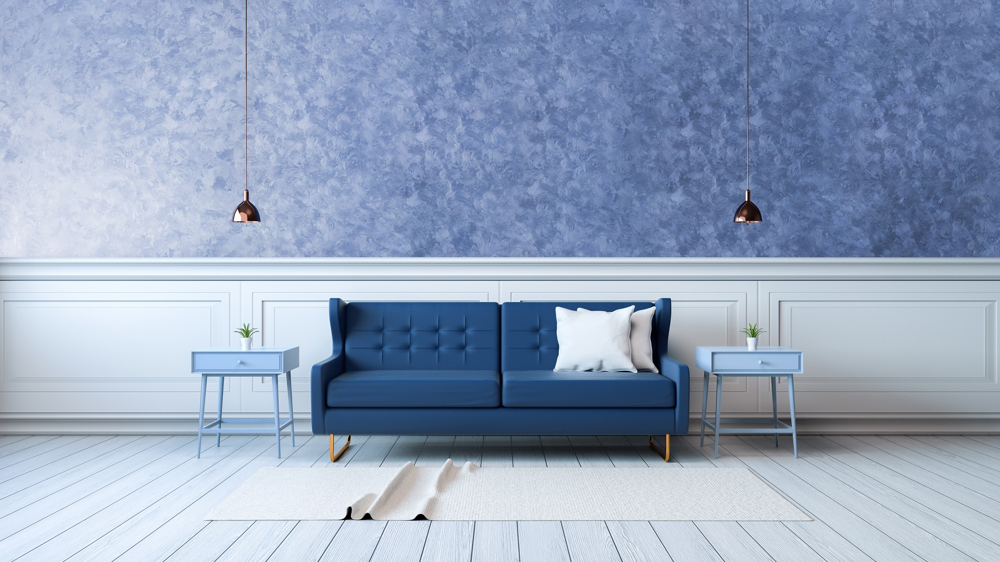

Штукатурка с эффектом шелка
Современный косметический ремонт становится настоящим полем битвы заказчиков, дизайнеров и продавцов. Для одних это возможность обогатиться (предложить подходящий продукт), для других обустроить уютное гнездышко, ну а третьим стать обладателем интересного проекта в портфолио. Если раньше найти материал, который будет выгоден всем участникам ремонта, было сложно, то теперь на рынке есть масса интересных материалов по таким показателям как стоимость, возможность локальной реставрации и устойчивость к уборке.
Один из них – штукатурка с эффектом шелка. Кроме того, что этот материал поражает разнообразием фактур, покупателей обрадует так же стоимость и возможность нанесения материала своими силами. Чтобы не тратить время на поиски в магазинах подходящего материала легко можно сделать так, что штукатурку эффект шелка заказать у нас выбрав подходящую цветовую гамму Оттенки штукатурки соответствуют картинкам в каталоге,(или более правильным решением будет выбрать из каталога с “живыми ”выкрсами, на которых наглядно отображается степень блеска, фактура и цвет, поэтому ошибиться с выбором практически невозможно.
Появление материала
Декорировать стены тканями пытались ещё наши предки. Когда переезжали из замка в замок, строили роскошные опочивальни для своих королей. Время прошло, но стремление к роскоши никуда не делось. Украшать стены шелком раньше могли только очень богатые люди. Кому-то из изобретателей понравилась идея с дорогостоящей тканью, но пришла в голову идея сделать её ещё более доступной.
Обычные варианты полотна получались так же дорогие и не эффективные с точки зрения расходования материалы, тогда пришла идея создать жидкий шелк, который бы ложился на стены легко, не рвался и выглядел бы не менее дорого. Впервые подобный материал появился на рынке строительных товаров для ремонта около 20 лет назад и был в дефиците, сейчас такой товар, как штукатурка эффект шелка, можно заказать в Нижнем Новгороде. У нас в салоне вы сможете посмотреть, как переливается материал под разным освещением, понять какой он на ощупь, а так же взять с собой выкрас для “примерки” на ваши стены.
Особенности материала
Иногда мягкую штукатурку с шелковистым блеском путают с жидкими обоями. Несмотря на похожий способ нанесения, эти виды финишного покрытия косметического ремонта принято относить к разным категориям. Основная разница заключается в следующих особенностях:
- эффект сияния и мягкости достигается в первом случае за счет того, что обои содержат в основе частички целлюлозы или шёлковые элементы, а краска с эффектом шёлк а ложится на стену в виде дорогой ткани с помощью различных техник нанесения, что дает более презентабельный вид и возможность создать различные текстуры
- достигнуть переливов шелка и мерцания с помощью жидких обоев невозможно в той же мере, как и при покрытии стен штукатуркой за счет того, что остается выраженная фактура, не имеющая отношения к гладкому шелку.
В состав рассматриваемого материала для покрытия стен входят маленькие элементы перламутра. За их счет достигается перелив, получается светоотражающая поверхность, которая делает интерьер разным при преломлении света под разными углами. Добиться интересной игры света и теней с помощью штукатурки можно, если соблюдать правильность нанесения материала.
Главное достоинство штукатурки с эффектом шелка от тех же обоев и любого другого финишного покрытия в косметическом ремонте – их уникальность. Рисунок можно сделать более крупным или на оборот мелким, предварительно советуем сделать пробный выкрас с вашим цветом и приложить его к поверхности, на которой нужно нанести материал.
Цветовые решения
В отличие от других декоративных покрытий, штукатурка эффект шелка, отличается особенностью состава. За счет хаотичного нанесения на стены и визуальных переливов мастера могут создавать не просто верхнее покрытие для стен, а рисовать настоящие живописные полотна с помощью преломления света. Одна из эффектных разновидностей подобного материала – перламутровая штукатурка с эффектом шелка, позволяет покрывать поверхности особенными сверкающими покрытиями, которые в сочетании создают неповторимые интерьеры.
Одна и та же комната, покрытая подобными материалами с учетом грамотной расстановки осветительных приборов, может легко изменить окружающее пространство. Варианты интерьера с шелковыми стенами будут обновляться несколько раз в день по настроению хозяина, если грамотно выставить световые элементы в декоре, так как из-за разницы дневного и искусственного освещения материала, тональность может меняться.
Кроме эффектного отражения, штукатурка эффект шелка, цена которого, так же будет зависеть от вида покрытия, может иметь разную фактуру. Например, в интерьере могут использоваться варианты с нежной струящейся тканью, мягким бархатом или блестящими переливами, все зависит от вида шелка, который вы выбрали.
Использование в интерьере
Такой материал, как штукатурка эффект шелка, Нижний Новгород может заказать в любом цветовом решении с необходимыми для отделки квартиры или офисного помещения эффектами. Шелковое покрытие уместно в любом стиле, если нанести его определенным образом, но для некоторых направлений оно смотрится наиболее актуально и уместно. Так как чаще всего штукатурка применяется в гостиной, спальне, коридоре или офисном помещении, то её применяют в классическом интерьере, формате арт-деко, модерне или хай-тек.

На стиль помещения может влиять выбранная фактура мокрого шелка. Если владелец предпочитает стиль модерн, то ему лучше остановиться на замше или нубуке в нежных тонах. Это могут быть голубые, нежно-серые, пепельно-сиреневые, перламутрово – жемчужные оттенки.
Шелк в чистом виде хорошо будет смотреться в классической гостиной или помещении в формате фьюжн. Здесь стоит обратить внимание н теплые, контрастные тона счастья: рыжие, красные, желтые, синие или розовые. Особенность стиля фьюжн в его противоречии, поэтому не страшно, если декоративная лепнина будет стоять рядом со стаканчиком кофе.
Ещё одно направление, которое всегда было связано с шёлком и богатством – Восток. Азиатский стиль всегда был ярким и броским, поэтому здесь подойдут шелк или бархат в ярких тонах. На полотнах поверхности могут использоваться плавные линии, быть намеки на драгоценные металлы и богатство, кружевные узоры. Эффектно смотрятся восточные узоры в виде золотых линий, круглых элементов, имитирующих женские драгоценные украшения.
В некоторых случая допустимо применять шелковое покрытие в кухне, ванной или снаружи здания, но в таких случаях обязательно нужно позаботиться о нанесении дополнительных защитных составах.
Достоинства и недостатки материала
Вне зависимости от категории товара и её ценового сегмента, штукатурка с эффектом шелка имеет некоторые особенности. Большую часть её свойств можно отнести к достоинствам, значительно меньшую к минусам. В числе плюсов мастера, работающие с подобными материалами, обычно отмечают:
- возможности нанесения своими силами, имея лишь поверхностный опыт
- создание единого полотна поверхности без соединительных швов между стыками нанесения;
- легкость в корректировке или реставрации готового слоя после высыхания
- доступность для всех видов помещений дома и в офисах;
- возможность создать уникальный дизайн интерьера
- возможность проведения влажной уборки стен после полного высыхания
- антистатический эффект, за счет чего пыль не оседает на задекорированных стенах,
Недостатков у такого покрытия, как штукатурка эффект мокрого шелка практически нет, а на те, что обычно отмечают специалисты, легко можно закрыть глаза при правильной эксплуатации и подготовке стен. К ним относятся:
- обязательность подготовки стен под покраску
- большой риск возникновения потертостей и потери внешнего вида при механических воздействиях, однако, с учетом легкости нанесения и реставрации спустя годы эксплуатации, легко можно подправить затертые места.
Процесс нанесения
Шелковая штукатурка, это в первую очередь, декоративное покрытие стены, поэтому основу необходимо заранее подготовить. Покупатели должны выровнять стены, обязательно пройти её несколько раз грунтовкой для надежной фиксации следующих слоев. Как только все необходимые условия были выполнены, следует действовать по следующему сценарию:
- подобрать пластмассовую емкость, в которую можно будет опускать валик, раскатывая краску;
- добавить в емкость воды, которая будет соответствовать комнатной температуре или быть немного теплее. проконтролировать, чтобы объем воды для разбавления соответствовал рекомендациям производителя
- тщательно перемешать краску миксером
- взять необходимое количество материала и перенести его на стену валиком или кельмой, после чего равномерно распределить материал согласно выбраной технике нанесения.
Краска с эффектом шелка в большинстве случаев изготовлена в виде готового жидкого состава, который остается только нанести. Нанесение этого типа материала происходит в 4 этапа:
- покрытие грунтовкой глубокого проникновения
- нанесение грунта (базы) предварительно заколерованого в цвет финишного покрытия
- нанесение и формирование первого слоя декоративной краски
- нанесение и формирование окончательного второго слоя декоративной краски
Чтобы не допустить ошибок и сделать финишное покрытие идеальным. Стоит учитывать некоторые особенности в процессе подготовки:
- мастерам стоит правильно подготовить стены, чтобы избежать трещин и сделать стены более гладкими нужно использовать стеклохолст или строительный флизелин с последующим финишным шпатлеванием
- металлические элементы в процессе использования придётся вытаскивать из стены, иначе они, например, в виде маяков могут впоследствии проявлять следы ржавчины;
- Перед нанесением стоит проверить влажность и температуры в помещении, а так же убедиться в том, что стены просохли после подготовительных работ.
Стоимость штукатурки
Стоимость на строительные материалы всегда сильно варьируется в зависимости от марки производителя и особенностей товара. Сейчас, можно сказать, что декоративная штукатурка с эффектом шелка относится к среднему ценовому сегменту, но так было не всегда. После первого появления на рынке России, материал относился к премиум сегменту, достать его могли не многие, а стоимость существенно завышалась. В то время штукатурку производили и доставляли в нашу страну только европейские страны.
Время шло, в стране стали появляться другие аналоги, которые были более дешёвыми, начался выпуск собственной, отечественной продукции. В настоящее время штукатурка с эффектом шелка, цены на неё стали гораздо доступнее за счет местного производства и меньших логистических трат. На прилавках магазинов можно найти варианты с более низкой стоимость и с высокими показателями, на которые влияют элементы состава, используемые производителем.
На стоимость товара могут влиять дополнительные качества товара:
- плотность краски;
- повышенная степень защиты от истирания;
- особенная разновидность степени блеска;
- расход на 1 квадратный метр;
- экологическая чистота и прочее.
В число самых дорогих категорий рассматриваемого товара мастера обычно относят матовый шелк, так как он обычно нуждается в дополнительной обработке защитными составами.
Чтобы не бегать по магазинам в поисках подходящего товара нужной расцветки, стоит заранее выбрать материал штукатурка эффект шелка, заказать в Нижнем Новгороде необходимые объемы. Возможность выбора подходящих оттенков, свойств товара позволяет воплотить самые смелые идеи покупателей, сделать стильное, современное помещение несмотря без длительных поисков в магазинах и торговых сетях.
Шелковая штукатурка легка в нанесении, поэтому её так любят многие наши клиенты, материал может нанести даже не профессионал. Для своих клиентов мы делаем пробные выкрасы и можем показать мастер класс по нанесению для вас или вашей бригады мастеров. Учитывая все вышесказанное, можно смело сказать, что краска с эффектом шелка станет отличным решением для стильного ремонта дома или в офисе.